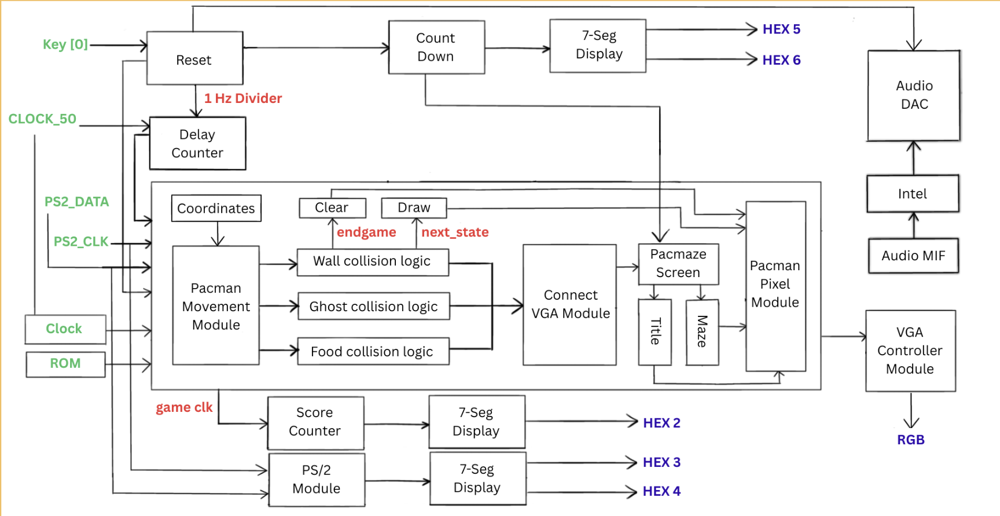

Pacman FPGA Implementation
A hardware implementation of the classic Pacman arcade game using Verilog HDL and FPGA technology. This project demonstrates real-time video generation, collision detection, PS/2 keyboard interfacing, and audio processing through dedicated hardware modules.
Project overview
This implementation runs entirely on an FPGA without the use of a general-purpose processor, leveraging parallel hardware execution for game logic, rendering, and peripheral communication. The system generates VGA video output at 160×120 resolution with 3-bit color depth, processes PS/2 keyboard input for player control, and supports audio output through an I2S audio codec interface.

Demo
Demonstration video — gameplay, hardware connections, and system functionality (opens in a new tab).
Hardware architecture
Top-level module structure
The design follows a hierarchical module architecture where the top_level.v module serves as the primary integration point for all subsystems:
top_level
├── pacman_logic
│ ├── PS2_Demo (keyboard interface)
│ ├── pacman_movement (FSM controller)
│ ├── connect_vga (collision detection)
│ └── count_down (timer logic)
├── pacman_pixel (VGA rendering engine)
├── pacmaze_screen (start screen renderer)
├── audio_demo (I2S audio controller)
├── count_down (global timer)
└── seg7_decoder (score display)
Core modules
Game logic controller (pacman_logic.v)
The game logic module orchestrates player input processing, movement state management, and collision detection. It implements a finite state machine that transitions between idle, movement, and collision states based on keyboard input and wall detection results.
- Input processing: Decodes PS/2 keyboard scan codes into directional commands
- State management: Maintains current game state (active, ended, paused)
- Collision detection interface: Communicates with VGA module for pixel-perfect collision detection
- Score tracking: Increments score counter upon successful pellet collection
Movement controller (pacman_movement.v)
Implements Pacman movement mechanics using an FSM. The module calculates movement vectors based on player input and maze geometry, performing multi-point collision checks so the character cannot pass through walls.
Collision detection algorithm:
- Samples 5 points along the leading edge of the character sprite
- Converts 2D coordinates to 1D memory address:
address = (y × 160) + x - Checks maze data ROM for wall presence at each sample point
- Blocks movement if any sample point detects a collision
// Multi-point collision checking example
assign maze_address = (pacman_y * 17'd160) + pacman_x;
assign up_pixel_0 = maze_address - 17'd482;
assign up_pixel_1 = maze_address - 17'd481;
// ... additional sample pointsVGA rendering system
Dual VGA rendering paths for start screen and game screen, with multiplexing controlled by game state.
Game screen renderer (pacman_pixel.v): Real-time pixel generation synchronized to VGA timing; sprite rendering with coordinate transforms; background maze from ROM; dynamic colors by game state.
Start screen renderer (pacmaze_screen.v): Loads background from MIF; resolution 160×120; 3 bits per pixel (8 colors); background file titlefinal.mif.
PS/2 keyboard interface (PS2_Demo.v)
- Protocol: Clock stretching, data packet reception, scan code translation
- Scan code decoding: Directional commands (WASD or arrows)
- Debouncing: Reduces spurious input
Audio system (audio_demo.v)
- I2C interface: Configures codec via
FPGA_I2C_SDAT/FPGA_I2C_SCLK - Streaming: Samples via
AUD_DACDATat 48 kHz - Clock generation: Master audio clock
AUD_XCKfor codec sync
Timer and display
count_down.v: Prescaled divider from 50 MHz; timer on HEX2/HEX3; timeout when zero.
seg7_decoder.v: 4-bit score to 7-segment on HEX1 (hex 0–F).
Signal interface
Clock and reset: CLOCK_50 (50 MHz); KEY[0] active-low reset.
Switches: SW[0] audio; SW[1] game restart; SW[3] audio mode.
VGA: VGA_CLK 25 MHz pixel clock; VGA_HS / VGA_VS; VGA_BLANK_N, VGA_SYNC_N; VGA_R/G/B[7:0].
PS/2: PS2_CLK, PS2_DAT bidirectional.
Audio: AUD_XCK, AUD_DACDAT, AUD_ADCDAT, AUD_BCLK, AUD_DACLRCK, AUD_ADCLRCK, I2C to codec.
Displays: HEX1–HEX5 7-segment; LEDR[9:0] status LEDs.
Game mechanics
Movement: Grid-based with pixel positioning; orthogonal directions only; collision prevents wall traversal.
Coordinates: X 9-bit (0–159), Y 8-bit (0–119); origin top-left (0,0).
Scoring: 4-bit counter on pellet collection; max 15 (hex F) on HEX1.
States: START_SCREEN, PLAYING, COLLISION, GAME_OVER — driven by timer, win, reset, and SW[1].
Implementation details
Clock domains: 50 MHz system logic; 25 MHz VGA; audio/I2S domain — synchronizers on asynchronous inputs where needed.
Memory: Maze ROM 160×120 × 1 bit; linear address (y × 160) + x. Title MIF 160×120 × 3 bpp.
Performance: ~60 Hz VGA; ~25 MHz pixel clock; collision checks in parallel with pipeline where applicable; input latency ~2–3 cycles.
Build and deployment
- Intel Quartus Prime (or compatible); target Cyclone IV or compatible
- VGA monitor, PS/2 keyboard, WM8731-class codec
- Add sources from
Final Submission Files/; pin assignments per board; timing for 50 MHz / 25 MHz - Files:
.qsf,.sdc,.miffor maze and backgrounds
Testing and verification
Functional tests: keyboard → movement, wall collision, timer, score, state transitions, VGA timing, audio codec config. STA for setup/hold and cross-domain paths.
Project structure
Project_ECE241/
├── Final Submission Files/
│ ├── top_level.v
│ ├── pacman_logic.v
│ ├── pacman_movement.v
│ ├── pacman_pixel.v
│ ├── pacmaze_screen.v
│ ├── connect_vga.v
│ ├── PS2_Demo.v
│ ├── audio_demo.v
│ ├── count_down.v
│ ├── delay_counter.v
│ ├── intel_sound.v
│ └── seg7_decoder.v
├── docs/images/
└── README.mdTechnical specifications
| Parameter | Specification |
|---|---|
| Target FPGA | Intel/Altera Cyclone IV (or compatible) |
| System clock | 50 MHz |
| VGA resolution | 160 × 120 |
| Refresh rate | 60 Hz |
| Color depth | 3 bpp (8 colors) |
| Pixel clock | 25 MHz |
| Audio sample rate | 48 kHz |
| PS/2 clock | ~10–16.7 kHz |
| Score range | 0–15 (4-bit) |
| Timer | 1 second per count |
Future enhancements
- Higher resolution (e.g. 320×240) and deeper color
- Ghost AI with pathfinding
- Power pellets and multiple mazes
- Non-volatile high scores; synced SFX
References
- VGA video timing standards
- PS/2 keyboard protocol
- I2S audio interface
- Intel/Altera FPGA documentation
License
Developed for educational purposes as part of ECE241 coursework.